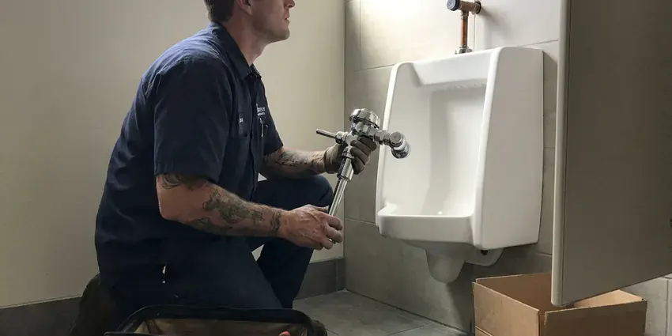

Faucet Repair in Yakima, WA
A drip that keeps you up at night in Yakima, WA is usually a worn washer or cartridge. Our plumbers fix it fast.
- All Faucet Types
- No Hidden Fees
- Same-Day Service
- Upfront Pricing

Same-Day Faucet Repair in Yakima, WA
We stop the drip and check the supply lines while we are there.
Kitchen, Bath and Tub Faucet Repair in Yakima, WA
FHN Plumbing repairs faucets throughout Yakima and the nearby Washington area, from a two-handle bathroom faucet with a worn washer to a pull-down kitchen faucet with a split hose. The common parts are on the truck. Figure on less than an hour for most faucet repairs, cleanup included.
Some of what we do:
- Seat and spring kits for ball faucets
- Replace washers and O-rings
- Clear scaled aerators

Additional Bathroom Plumbing Services in Yakima, WA
From toilets to showers, our bathroom plumbing team in Yakima, WA handles repairs, installs, and upgrades with tidy, code-compliant work.


Customers
Why Choose FHN Plumbing for Faucet Repair in Yakima, WA?
Genuine manufacturer cartridges cost a little more than generic ones, but generics often fail within months and can void a lifetime warranty. Our plumbers install the brand part. Moen, Delta, Kohler and Pfister cartridges are on the truck.
- Full Inspection, We check supply lines and stops on every call.
- Quiet Faucets, No more dripping sound at night.
- Prevent Damage, Prompt repairs keep water out of the sink cabinet.
Citywide Coverage
Rental owners and property managers across Yakima use us for faucet repairs between tenants and for drips reported mid-lease on short notice. Entry gets set up with the tenant. The owner gets one invoice with photos.
Experienced Team
Each technician has worked on everything from vintage compression faucets with packing nuts to touchless kitchen faucets with solenoids and battery packs. They keep up with new designs. Manufacturers change cartridges every few years, and our team keeps current.
Safety-First Approach
Permits are not needed for most faucet repairs, but changing supply lines inside the wall or adding a new fixture can bring in local code rules under Washington plumbing standards. We will tell you which case yours is. When one is required, we file it before work starts.
Trusted Certified Yakima Plumbing Services Professionals
At FHN Plumbing, we take pride in licensed, certified plumbing services throughout Yakima, WA. Credentials matter in this trade. Every repair, install and maintenance visit follows strict safety and quality rules, and the plumbers doing the work carry recognized industry credentials.
Call Us Now PHCC Plumbing Contractor Recognition
PHCC Plumbing Contractor Recognition Better Business Bureau (BBB) Accreditation
Better Business Bureau (BBB) Accreditation Angi Certified Pro
Angi Certified Pro ISO 9001 Quality Management Certification
ISO 9001 Quality Management CertificationFaucet Repair Work in Yakima, WA
Cartridge Faucet Repair in Yakima, WA
Single-handle faucets from Moen, Delta, Kohler and Pfister mostly use replaceable cartridges, and a worn one shows up as a drip, a stiff handle or water that will not hold a steady temperature. The part number depends on the brand and model. We match it. Swapping a common cartridge like the Moen 1225 takes about half an hour, cleanup included.

Bathroom Faucet Repair in Yakima, WA
Bathroom sinks see less wear than kitchen sinks, but scale still builds up in cartridges, and pop-up drains break at the pivot rod under the sink. Both are quick fixes. We match cartridges for widespread, centerset and single-hole faucets, and pop-up assemblies are replaced to fit the finish.
Dripping Faucet Solutions in Yakima
Every drip has a source, and on a faucet that has dripped for years there is usually more than one worn part. Anything worn gets replaced, and the rest gets checked. Each valve type, from compression to ceramic disc, wears in its own way, so the repair is matched to the valve inside yours.
Disc Faucet Repair in Yakima
Ceramic disc faucets last a long time, but grit from a water main repair or scale from hard water can scratch the discs or wear out the rubber inlet seals underneath. The seals are cheap. If the discs are scratched, the whole cartridge gets replaced, since the two discs are lapped to fit each other and cannot be resurfaced.
Dripping Faucet Repair in Yakima
One drip a second adds up to more than 3,000 gallons a year, roughly the water used in 180 showers. It shows up on the bill. We find the worn washer, O-ring or cartridge and replace it, then check the cabinet below for swelling or stains from the slow leak.
Cracked Faucet Body Repair in Yakima
Cracked faucet bodies, usually from freezing or an old brass casting that finally gave out, cannot be repaired and need a replacement faucet. Shut the stops first. A new faucet can usually go in on the same visit, and we will check the supply lines and stops while the water is off.
Low Water Flow Faucet Repair in Yakima
Sputtering flow, where the water spits and surges, often means air or debris in the line after a water main repair, or a partly clogged cartridge screen. A flush of the lines usually fixes it. Pull-down faucets also have check valves in the hose that can stick, and we clean or replace those.

Hard Water Faucet Repair in Yakima
Scale is the biggest reason faucet seals wear early, because the mineral crust scratches rubber and keeps ceramic discs from closing flat. It happens faster with hard water. The valve body gets cleaned while the old part is out, so the new cartridge or washer seals against a smooth surface.
Faucet Repair Near You in Yakima, WA
Searching for faucet repair near me usually means a drip that has gone on long enough to keep you up at night or show up on the water bill. We can quote it over the phone once you tell us the brand. FHN Plumbing sends plumbers who work in Yakima every day.
Close by matters most when a faucet will not shut off, since water keeps running until someone closes the stops under the sink. Active leaks go first. Dispatch keeps someone nearby in most of Yakima.
FHN Plumbing at a Glance
- Licensed and insured plumbers serving Yakima, WA
- 24/7 emergency service with same-day scheduling
- Clear written estimates, no hidden fees
- 4.9-star rated by 382+ Washington customers
Yakima Map
Yakima Information
- Population
- 96,750
- Area codes
- 509/509/253
- Service area
- Yakima and communities within 40 miles
- Nearby
- Wenatchee, Richland, Kennewick, Pasco
Soft water can be slightly corrosive to copper over time, which sometimes shows up as pinhole leaks in older supply lines. An early faucet repair in Yakima keeps scale from locking up the cartridge and keeps drips out of the sink cabinet.
Talk to a Plumber
Reach out to FHN Plumbing for reliable plumbing work done by licensed pros in Yakima, WA.
Our Specialized Plumbing Services in Yakima, WA
At FHN Plumbing, we handle the full list of plumbing services across Yakima, WA. From leak detection to full system installs, our team works fast and charges fair prices on homes and commercial properties alike. Take a look at our core services below:


What to Expect From a Faucet Repair in Yakima, WA
We find the cause, fix it with the right part and test it before we leave.
Call or Book Online
Call (425) 491-3131 or use the form. Describe what the faucet is doing and we set a time.
Find the Cause
A licensed plumber at your Yakima home takes the faucet apart and finds the worn part.
Repair and Test
Once you approve the price, we install the new parts and test hot, cold and flow.
Frequently Asked Questions About Faucet Repair in Yakima
Expect $150 to $400 for most drips and leaks, with O-ring and washer repairs near the bottom and internal valve work near the top. A cartridge covered by warranty can bring the cost down. We quote it after we see the faucet.
Generally no, since cartridge, handle and like-for-like faucet swaps are treated as repairs in most places. Moving supply lines or changing the fixture type is another matter, and the rules for Yakima come from the local building department. We check before we start.
Moen, Delta, Kohler, Pfister, American Standard, Grohe, Hansgrohe and most others. Common cartridges ride on the truck.
A drip from the spout, water around the handle or base, a handle that is stiff or loose, and a temperature that drifts while you use it are the usual signs. Banging or squealing counts too. So does weak flow from just one faucet.
Repair means replacing worn parts inside the faucet you have, like washers, seats, O-rings or a cartridge, while replacement means a whole new faucet on the sink. Repair is usually cheaper. Replacement makes sense for cracked or discontinued faucets.
Thirty minutes to an hour covers most washer and cartridge jobs. Stuck cartridges or seized stems can take longer, especially on older faucets where scale has locked the parts in place and the valve body has to be soaked before anything comes loose. We plan for it.
Usually, if the body is solid and parts are still made. Cracked bodies and discontinued parts point toward a new faucet, especially when the repair would cost more than half the price of a decent new one. You get both prices.
On an older compression faucet, a washer swap is a fair DIY job if you can find the right washer and the seat underneath is smooth. Cartridge faucets are trickier. Forcing a stuck cartridge can crack the valve body, which turns a repair into a new faucet.
What Our Customers Say About Our Plumbing Experts

Brian W.
I smelled gas behind the dryer and called right away. The plumber found a corroded flex connector, replaced it, and pressure tested the whole line before turning the gas back on. He let me watch the gauge hold steady for fifteen minutes.
Gas Line Repair · South Hill, WA
Robert G.
The camera showed a full break in our clay sewer line near the street. FHN Plumbing replaced it with a trenchless pipe burst, so the only digging was two small pits in the yard. They let us watch the footage before and after.
Sewer Line Replacement · Auburn, WAJames P.
Our restaurant had a slow leak at the hand sink that was rotting the cabinet base. FHN Plumbing came in at six in the morning before prep, replaced the trap and both supply lines, and was packed up before my first cook clocked in.
Commercial Plumbing · Auburn, WA
Sofia M.
Two new toilets went in during one visit. The tech set them on new wax rings and swapped the old supply lines. He also noticed our bathroom faucet dripping and replaced the cartridge while he was there. No mess left behind.
Toilet Installation · Auburn, WA
Karen W.
After our third pinhole leak in copper, we stopped patching. FHN Plumbing gave us a written plan room by room and repiped the house in PEX while we stayed in it. The crew covered our floors every morning and cleaned up every night.
Repiping · South Hill, WA
Tyler J.
We bought a taller comfort height toilet for my dad, who just had knee surgery. The plumber pulled the old one, found the flange was cracked, and replaced it before setting the new bowl. Took about two hours.
Toilet Installation · Auburn, WA